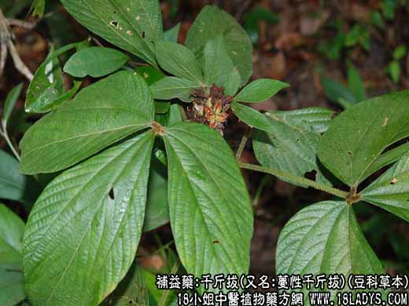

【中药概述】
千斤拔，又名:蔓性千斤拔，豆科藤状草本，属补益药。
【千斤拔_千斤拔的功效与作用_千斤拔的别名】
别名：老鼠尾、大力牛、独脚龙、牛趸皮。
植物名：蔓性千斤拔。
生长环境：本品为直立亚灌木、市郊丘陵地常见之。
分布：菲律宾群岛及我国等地区。
入药部分：根。
采集期：全年。
自采地点：山岗。
性味：舒筋活络、壮筋骨、去劳倦。
主治、用量和用法：1、劳伤、苦伤、咳嗽：用干根1至2两，清水煎服，或加猪瘦肉同煎；2、风湿腰痛、骨节痛、手足酸痛无力：用干根1至2两，清水煎服，或加猪尾，猪脚同煎；3、跌打，配伍用；肾亏；配伍用。
验方：（治腰肾虚痛方）千斤拔1两、狗脊1两、半枫荷8钱、猪尾一条、清水六碗，煎成一碗，温服。
（方解）肾为水脏，具真元之火，相互协调，以蒸腾变化。今肾阳虚弱，温养无从，则下焦之病百出；腰酸脚软更为明显。今以千斤拔入下焦耳温养肾阳；狗脊强腰肾；半枫荷走下焦，理风湿以为佐；猪尾入腰为使，并有补益作用；邪去正安，健康自复。
（方歌）腰肾虚疼痛奈何，千斤狗脊半枫荷，猪尾一条同煎服，扶阳固肾起沉疴。
（治脚软无力方）千斤拔1两，臭屎茉莉头1两、独脚球1两、豆豉羌1两、加牛脚筋或猪脚筋、鸡脚等，清水八碗，煎成一碗半，温服。
（方解）肝肾阳虚脚步浮，千斤豆豉独脚球，或加猪牛脚筋煎，最后勿遗茉莉头。